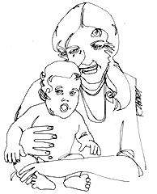

During the last minute chaotic assembly of this issue, we misplaced the folder containing the original of this article and we can't, at present, identify the author. We have both a credit line and a check waiting for the proper party, however, so. . .who are you?-JS
It wasn't until the very moment that our baby daughter was born by natural means that my husband and I changed our concept of the world. At that instant we shed our pragmatic American "history is bunk" attitude and realized-on a gut level-that we, as human beings, have truly evolved from and are related to (both historically and ecologically) the natural world of animals and plants. The realization has changed my perception of the world.
Our daughter, Caitlin, was born by the Lamaze method of prepared childbirth. It's fantastic. Most people think of it as "natural childbirth" (i.e. the mother fully conscious and aware of every physical sensation of the birth process). There is actually far more to the Lamaze method than that, however.
Natural childbirth seems to mean (if the term means anything at all) that the mother refuses all drugs, grits her teeth and hangs on. Whether or not the father is there is irrelevant. The point is that the mother can "take it". (To be fair, I suppose the point is also to protect the baby-still in utero-from strong pain killing and sedative drugs.)
The idea behind the Lamaze method, on the other hand, is that the parents-together-work with the mother's natural labor to deliver the baby. Through lots of practice, the mother reconditions herself so that-instead of tensing and screaming when a contraction comes-she begins a rhythmic pant-breathing. As she does this the father times the contractions, steadies her performance and offers general moral support. The Lamaze people contend that the method makes labor both bearable and easier because the mother is working with, and not against, her own body. Some devotees even insist that it makes labor totally painless but I think that's going too far.
I was originally attracted to the Lamaze method by the stress which it places on the father to be with and coach the mother during pregnancy, labor and delivery. The father is just as much a creator of his child as the mother. Why should she experience the profound event of childbirth alone?
When we discovered that I was pregnant we were overwhelmed. It wasn't that we didn't want a baby . . . it was just that a baby had no place in our current frame of reference. So-hard as it is for us to believe now-we could only think about the birth abstractly. We thought it would be neat (cool, in, etc.) to have the baby naturally and together. We didn't realize what an incredible experience it would be.
I asked my doctor about the idea and he told me there was an organization of "natural childbirth" people-doctors mostly, and lots of convinced parents-called The American Society for Psychoprophylaxis in Obstetrics, 36 West 96th St., New York, N.Y. 10025. I doubt that you've heard of it and I certainly wouldn't have if my doctor hadn't told me.
About that time, we moved and-doctor-wise-were left high and dry. Also about that time-the fifth month-the baby started squirming inside me and quickly motivated me to call the local branch of the Psychoprophylactic Society. The folks there gave me a list of doctors who did Lamaze and a list of hospitals that gave a Lamaze course and allowed the baby's father into both the labor and delivery rooms.
Incidentally, not all doctors-by far-believe in the Lamaze method and our "list" of hospitals contained exactly one name! But the tide is changing and, if your doctor hasn't yet seen the light, ask him to recommend you to one who has. If he can't or won't, write to the national organization. They'll give you a lead.
When we registered for the Lamaze course (which didn't begin until six weeks before our baby's due date) at the hospital to which we had been referred, we were given a list of books to read. I'm going to tell you the three best ones (they're fall paperbacks) here because I think they present as good an idea as a book can of the Lamaze Childbirth Method.
AWAKE AND AWARE by Dr. Irwin Chabon explains the history of childbirth practices, including the Lamaze method. Chabon reminds us that the Lamaze technique is valuable for all three family members: healthier for the baby because of lack of strong drugs; exciting and profound for the mother because she is fully conscious and participating in the birth of her baby; meaningful for the father because he also participates in the birth of his child. Chabon makes you enthusiastic by making the whole thing seem real.
SIX PRACTICAL LESSONS FOR AN EASIER CHILDBIRTH by Elisabeth Bing gives specific explanations-with lots of illustrations-of preparatory exercises for the parents to do. The book also clearly describes the various phases of labor and explains the breathing-relaxing exercises that go with each.
THANK YOU, DR. LAMAZE by Marjorie Karmel. A first-person account by a woman who has had two children by the Lamaze method. This popular book introduced the Lamaze technique to America only 11 years ago, in 1960!
As John and I devoured the books we became more and more horrified and convinced: horrified that we couldn't do it and convinced that we had to give it a try. The baby rapidly became less abstract with every book we read and each firm kick she gave.
If we had any doubts at that point, they immediately disappeared when we started the hospital classes. Mrs. Peggy Waite was the obstetric nurse who taught the course and she was supremely practical . . . but she made every couple in that class realize that they were carrying their baby.
Peggy taught us the Lamaze exercises and the philosophy behind them. She wasn't a fanatic (she didn't tell us we could control our feelings completely or that the mystical heights of childbirth magic would allow us to overcome all sensation of pain) . . . but, by being sensible, Peggy was great.
Thanks to Mrs. Waite, we began to feel a sense of awe for what was about to happen to us. The books had been thorough but a book can't communicate essence of experience the way another person can. Even Peggy couldn't really prepare us for the powerful physical-metaphysical thing we would later experience . . . but she certainly helped.
John and I practiced simulated labor every night (not that you can simulate labor, but we tried). When the first labor pains finally started, we were euphorically excited. We were also ready.
The euphoria passed. At first, sitting in the hospital bed and talking to John, I felt I could stay in labor forever. I thought that maybe, I was one of those people who could have a baby with barely a twinge.
Well, I wasn't. The contractions came harder and closer together. I shifted from euphoria to calm, and from calm to determination. After six hours-not counting the hours at home-I was still only five centimetres dilated and, in pregnant-lady jargon, that means I had a long way to go. John very sensibly said, "Nothing doing, we're holding on fine," during my fleeting moment of let's-chicken-out . . . and I kept on panting.
The baby was pushing pretty hard by then and I tried to imagine what the poor little thing felt like. It must have been a tight squeeze: only my abdomen and pelvis hurt . . . but it was the baby's head! At about 6:00 p.m. John left for eight minutes to bolt down a sandwich. For those eight minutes I nearly drowned in self-pity. When he got back I felt that I could go on again. That's how important it is to have your husband with you.
At 8:00 our doctor came in. He said the birth was taking too long and that I'd exhaust myself, so he gave me a shot of Pitocin to speed up contractions. I doubt that I can describe the feeling of the next few minutes: I suddenly felt a great, primeval force in me telling me to PUSH! I gasped it out to the doctor-he nodded-and I pushed.
I have never experienced anything like that before and John told me later that he was dumbfounded.
I made an animal-cry with the sheer effort of giving my whole being over to that moment of intensity. I had the dimly-conscious, mostly body-realization that I was about to repeat what the whole animal world before me had done: to give birth to a new and separate life. The Lamaze course had not prepared us for this and I don't know if it could have . . . and anyway it didn't make any difference because we were experiencing it then, completely, totally.
As each contraction came and I pushed, my body became more aware of itself and of what it was doing. Then came a great moment of calm . . . followed by a feeling of hugeness as my body emptied. And then-as I leaned over my legs to watch and John stood close to me-there was Caitlin. She squirmed a little and gave a little cry, and coughed, and breathed.
She was our child. We had connected with the heritage of life.
|
 |
|
|